Licenca
To delo je na voljo pod pogoji slovenske licence Creative Commons 2.5:
priznanje avtorstva - nekomercialno - deljenje pod enakimi pogoji.
Celotna licenca je na voljo na spletu na naslovu http://creativecommons.org/licenses/by-nc-sa/2.5/si/. V skladu s to licenco je dovoljeno vsakemu uporabniku delo razmnoževati, distribuirati, javno priobčevati, dajati v najem in tudi predelovati, vendar samo v nekomercialne namene in ob pogoju, da navede avtorja oziroma avtorje in izdajatelja tega dela. Če uporabnik delo predela, kar pomeni, da ga spremeni, preoblikuje, prevede ali uporabi to delo v svojem delu, lahko predelavo dela ponudi na voljo le pod pogoji, ki so enaki pogojem iz te licence oziroma pod enako licenco.

Funkcije
Funkcija ali podprogram je zaporedje stavkov, ki smo mu določili neko ime. Od drugod v programu lahko potem to funkcijo pokličemo in s tem od računalnika zahtevamo, naj takrat izvede zaporedje stavkov, ki tvorijo funkcijo. Pri klicu lahko funkcija dobi tudi vhodne podatke (parametre) in na koncu vrne nek rezultat, ki ga lahko klicatelj funkcije uporablja pri nadaljnjem delu.
Funkcije pridejo prav, ker lahko z njimi razdelimo program na manjše in bolj obvladljive dele. Ko funkcijo napišemo in se prepričamo, da deluje pravilno, jo lahko odtlej uporabljamo kot nekakšno »črno škatlico«, ne da bi morali vsakič znova razmišljati o podrobnostih tega, kako ta funkcija opravi svoje delo.
Funkcija ponavadi rešuje nek zaokrožen in jasno določen podproblem znotraj širšega problema, ki ga rešuje celoten program. Funkcije torej razvijamo tako, da znotraj problema, ki ga rešujemo, opazimo nek primeren podproblem, razmislimo o tem, katere vhodne podatke bomo potrebovali pri reševanju tega podproblema, in nato napišemo zaporedje korakov (stavkov), ki rešijo ta podproblem.
Oglejmo si konkreten primer: naslednja zelo preprosta funkcija dobi kot parametra števili a in b, pogleda, katero od njiju je večje, in to večje število vrne kot rezultat funkcije.

Delček funkcija navaja, da gre za deklaracijo funkcije. Z njo sporočimo, kako naj bo naši funkciji ime (v tem primeru je to Vecje) in kateri stavki naj jo sestavljajo (to je blok zamaknjenih stavkov, znotraj delčka; tej skupini stavkov pravimo telo funkcije). Tolmač na tem mestu teh stavkov še ne bo poskušal izvesti, pač pa si jih le zapomni za pozneje.
Za imenom funkcije smo tudi navedli, da ta funkcija pri klicu zahteva dva parametra, ki ju bo videla pod imenoma a in b. Funkcija lahko parametre uporablja podobno kot spremenljivke. V našem primeru ima funkcija dva parametra, v splošnem pa jih imajo lahko funkcije tudi več ali manj (lahko tudi nobenega).
Kot vidimo v zgornjem primeru, se lahko v funkciji pojavlja stavek vrni. Ko tolmač pri izvajanju funkcije pride do tega stavka, se takoj vrne iz funkcije (preostanka telesa funkcije ne izvede) in vrne vrednost, ki je bila navedena za besedo vrni. V našem primeru torej naša funkcija vrne vrednost vec, ki vsebuje bodisi vrednost a bodisi b, odvisno od tega, katera je večja.
Zdaj ko imamo funkcijo deklarirano, jo lahko iz drugih delov programa pokličemo tako, da navedemo njeno ime in nato še parametre, na primer takole:
| ... | Python | |||
Podizraz Vecje(10, 20) je klic funkcije; tolmač bo, da izračuna njegovo vrednost, izvedel telo funkcije Vecje in pri tem kot parameter a uporabil vrednost 10, kot parameter b pa vrednost 20. V tem konkretnem primeru funkcija vrne 20, kar potem tolmač vzame kot vrednost podizraza Vecje(10, 20)
in s to vrednostjo računa naprej – v našem primeru se ta vrednost sešteje s 30 in rezultat priredi spremenljivki c, tako da ima ta na koncu vrednost 50.